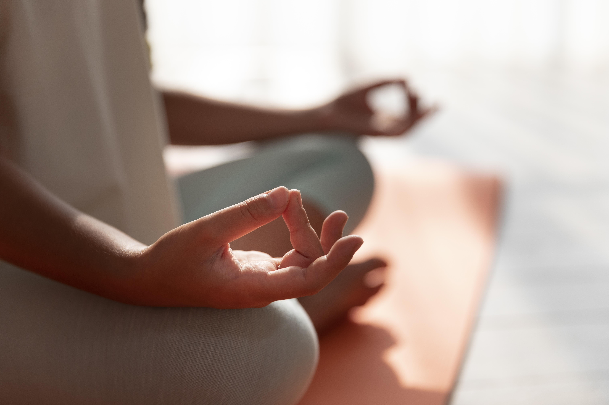

Suri Yoga es un programa de yoga y mindfulness orientado a infancias y adolescencias, diseñado para acompañar procesos de autorregulación emocional, corporal y atencional en contextos educativos.
Vivimos en entornos de alta estimulación y fuerte presencia de pantallas, con escasos espacios de pausa corporal consciente. Estas condiciones impactan directamente en la atención, la regulación emocional y el clima grupal dentro de las instituciones.
La propuesta ofrece espacios estructurados de pausa, presencia y experiencia corporal, que favorecen mejores condiciones para el aprendizaje, la convivencia y el bienestar general de la comunidad educativa.
Suri Yoga se integra a la dinámica institucional, respetando tiempos, encuadres y proyectos pedagógicos existentes.
Explorá los programas Raíz, Pausa, Trama y Semilla.
Soy Candela, psicóloga, docente y maestra de yoga y mindfulness infantil.
Escribime y coordinamos.